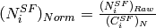
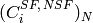
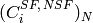
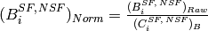
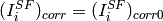
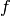

DNSFlippingRatioCorr dialog.
Table of Contents
| Name | Direction | Type | Default | Description |
|---|---|---|---|---|
| SFDataWorkspace | Input | MatrixWorkspace | Mandatory | A workspace with spin-flip experimental data from sample. |
| NSFDataWorkspace | Input | MatrixWorkspace | Mandatory | A workspace with non spin-flip experimental data from sample. |
| SFNiCrWorkspace | Input | MatrixWorkspace | Mandatory | A workspace with spin-flip NiCr data. |
| NSFNiCrWorkspace | Input | MatrixWorkspace | Mandatory | A workspace with non spin-flip NiCr data. |
| SFBkgrWorkspace | Input | MatrixWorkspace | Mandatory | A workspace with spin-flip background for NiCr. |
| NSFBkgrWorkspace | Input | MatrixWorkspace | Mandatory | A workspace with non spin-flip background for NiCr. |
| SFOutputWorkspace | Output | MatrixWorkspace | Mandatory | A workspace to save the corrected spin-flip data. |
| NSFOutputWorkspace | Output | MatrixWorkspace | Mandatory | A workspace to save the corrected non spin-flip data. |
| DoubleSpinFlipScatteringProbability | Input | number | 0.05 | Probability of the double spin-flip scattering. Number between 0 and 1. |
Warning
This algorithm is being developed for a specific instrument. It might get changed or even removed without a notification, should instrument scientists decide to do so.
This algorithm applies flipping ratio correction to a given data workspaces. As a result, following workspaces will be created:
Flipping ratio correction is performed using the measurements of  standard sample (hereafter NiCr). Background for NiCr must be also measured and provided to the algorithm as an input. Both, spin-flip anf non-spin-flip measurements are required. This algorithm performs the flipping ratio correction for a particular run in following steps:
standard sample (hereafter NiCr). Background for NiCr must be also measured and provided to the algorithm as an input. Both, spin-flip anf non-spin-flip measurements are required. This algorithm performs the flipping ratio correction for a particular run in following steps:
Normalize both, spin-flip (hereafter SF) and non-spin-flip (hereafter NSF), workspaces to a chosen normalization:


where  is the signal from the
is the signal from the  th detector in the NiCr spin-flip and non-spin-flip workspace, respectively and  is the number in the corresponding bin of the normalization workspace. The Divide v1 algorithm is used for this step.
th detector in the NiCr spin-flip and non-spin-flip workspace, respectively and  is the number in the corresponding bin of the normalization workspace. The Divide v1 algorithm is used for this step.
Normalize Background workspace to a chosen normalization:

where  is the signal from the th detector in the spin-flip and non-spin-flip background workspace, respectively and
is the signal from the th detector in the spin-flip and non-spin-flip background workspace, respectively and  is the number in the corresponding bin of the normalization workspace. The Divide v1 algorithm is used for this step.
is the number in the corresponding bin of the normalization workspace. The Divide v1 algorithm is used for this step.
Warning
Normalization workspaces are created by the LoadDNSLegacy v1 algorithm. It is responsibility of the user to take care about the same type of normalization (either monitor counts or run duration) for given workspaces.
Subtract Background from NiCr:

The Minus v1 algorithm is used for this step. In the case of negative result, the error message will be produced and the algorithm terminates.
Calculate the correction coefficients:

The Divide v1 algorithm is used for this step.
Apply correction to the data:


where  are the neutron counts in the SFDataWorkspace and NSFDataWorkspace, respectively.
are the neutron counts in the SFDataWorkspace and NSFDataWorkspace, respectively.
Apply correction for a double spin-flip scattering:


where  is a double spin-flip scattering probability. It is a number between 0 and 1.
The input workspaces have to have the following in order to be valid inputs for this algorithm.
If any of these conditions is not fulfilled, the algorithm terminates.
For the physically meaningful correction it is also important that these workspaces have the same slits size, detector bank rotation angle and the neutron wavelength. If some of these parameters are different, algorithm produces warning. If these properties are not specified in the workspace sample logs, no comparison is performed.
Example - Apply flipping ratio correction to a Vanadium run:
from os.path import join
import numpy as np
datapath = "/path/to/data/dns/rc36b_standard_dz"
# define input files.
sf_vanafile = join(datapath, 'dz29100525vana.d_dat')
nsf_vanafile = join(datapath, 'dz29100526vana.d_dat')
sf_bkgrfile = join(datapath, 'dz29100645leer.d_dat')
nsf_bkgrfile = join(datapath, 'dz29100646leer.d_dat')
sf_nicrfile = join(datapath, 'dz29100585nicr.d_dat')
nsf_nicrfile = join(datapath, 'dz29100586nicr.d_dat')
# load files to workspaces
sf_vana = LoadDNSLegacy(sf_vanafile, Normalization='duration', Polarisation='x')
nsf_vana = LoadDNSLegacy(nsf_vanafile, Normalization='duration', Polarisation='x')
sf_nicr = LoadDNSLegacy(sf_nicrfile, Normalization='duration', Polarisation='x')
nsf_nicr = LoadDNSLegacy(nsf_nicrfile, Normalization='duration', Polarisation='x')
sf_bkgr = LoadDNSLegacy(sf_bkgrfile, Normalization='duration', Polarisation='x')
nsf_bkgr = LoadDNSLegacy(nsf_bkgrfile, Normalization='duration', Polarisation='x')
# for a physically meaningful correction, we must subtract background from Vanadium
# this step is usually not required for other kinds of samples
# retrieve normalization workspaces
sf_vana_norm = mtd['sf_vana_NORM']
sf_bkgr_norm = mtd['sf_bkgr_NORM']
nsf_vana_norm = mtd['nsf_vana_NORM']
nsf_bkgr_norm = mtd['nsf_bkgr_NORM']
# subtract background
sf_vana_bg = sf_vana/sf_vana_norm - sf_bkgr/sf_bkgr_norm
nsf_vana_bg = nsf_vana/nsf_vana_norm - nsf_bkgr/nsf_bkgr_norm
# apply correction
DNSFlippingRatioCorr(sf_vana_bg, nsf_vana_bg, sf_nicr, nsf_nicr, sf_bkgr, nsf_bkgr,
SFOutputWorkspace='sf_corrected', NSFOutputWorkspace='nsf_corrected',
DoubleSpinFlipScatteringProbability=0.03)
# retrieve output workspaces
sf_corrected = mtd['sf_corrected']
nsf_corrected = mtd['nsf_corrected']
# calculate ratio of spin-flip to non-spin-flip
vana_ratio = sf_corrected/nsf_corrected
# ratio must be around 2, print first 5 points of the data array
print np.around(vana_ratio.extractY()[:5])
Output:
[[ 2.] [ 2.] [ 2.] [ 2.] [ 2.]]
Categories: Algorithms | PythonAlgorithms | MLZ | DNS | CorrectionFunctions
Python: DNSFlippingRatioCorr.py